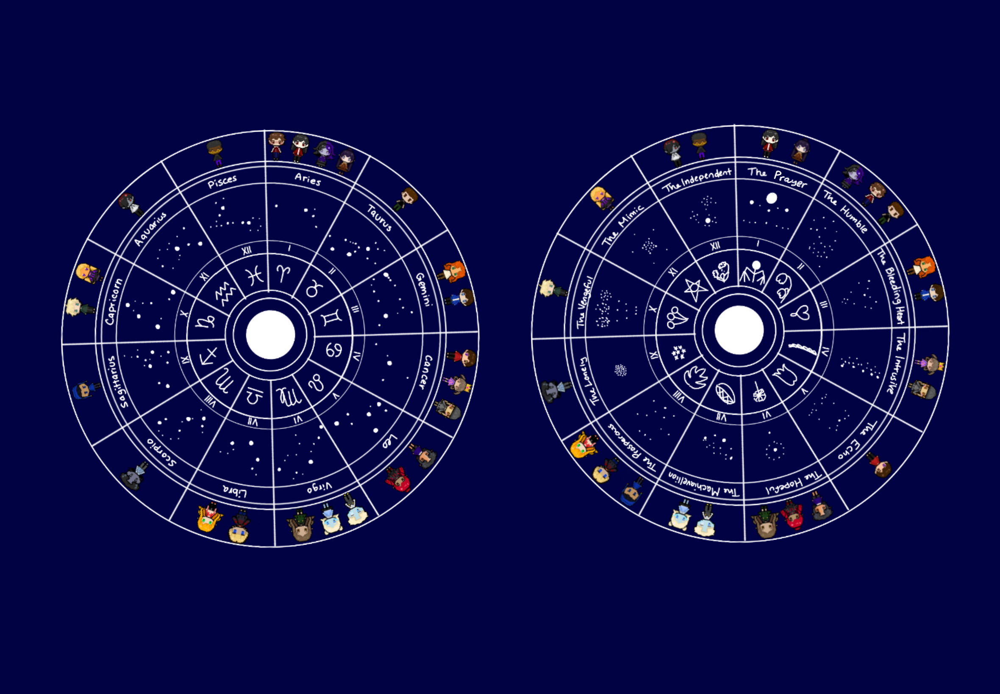

The Mimic
(January 1st to January 31st)
Element: Earth
Color: White
Greatest Compatibility: The Hopeful, The Vengeful, Other Mimics
Lucky Numbers: 0, 6, 9
Bond Affiliation: Anchor
Description: The Mimics often go with the flow and adapt to their surroundings, tending to get along with each other very well. Many of them lack overall drive and passion, though they make up for in adaptability and forgiveness. (This is the first sign in Straya's zodiac.)
The Independent
(February 1st to March 14th)
Element: Earth
Color: Green
Greatest Compatibility: The Lonely, The Echo
Lucky Numbers: -48, 2, 12
Bond Affiliation: Anchors/Unrecognized Niche
Description: The independent are often self sufficient creatures, preferring to deal with most things on their own. They often find themselves in one-sided anchor bonds, their person often relying on them.
The Prayer
(March 15th to March 27th)
Element: Plasma
Color: Gold
Greatest Compatibility: ???
Lucky Numbers: 15, 21, 27, 333
Bond Affiliation: None
Description: The Prayer are children born when the host star aligns with surrounding stars to depict The Provider during the holiday of Solivane. Because of this, children born during this period are gifted their own zodiac and are often considered special. The chosen one is always born during this time, another reason as to why these children are called The Prayer. The Prayer can be incredibly diverse, making them hard to pinpoint in terms of a zodiac, though they are all special.
The Humble
(March 28th to April 30th)
Element: Air
Color: Yellow
Greatest Compatibility: The Bleeding Heart, The Hopeful
Lucky Numbers: -1, 4, 18
Bond Affiliation: Anchor
Description: The Humble are often selfless and friendly, finding themselves in the company of all types of people. As their sign states, they tend to be humble and thoughtful of the people around them.
The Bleeding Heart
(May 1st to May 31st)
Element: Fire
Color: Pink
Greatest Compatibility: The Humble, The Echo, The Prosperous
Lucky Numbers: -29, 89, 96
Bond Affiliation: Soul
Description: Bleeding hearts, as the name states, are quite literally bleeding hurts that radiate passion and wear their hearts on their sleeves. Bleeding Hearts often form multiple soul bonds as a result of higher emotional intellect.
The Intrusive
(June 1st to June 30th)
Element: Wind
Color: Orange
Greatest Compatibility: The Vengeful, The Machiavellian, The Prosperous
Lucky Numbers: 42, 69, 57
Bond Affiliation: Warden and Tethers
Description: The Intrusive are often a chaotic force of nature, finding ways to insert themselves into situations and meddle. Because of this, they often find themselves with wardens and tether bonds as opposed to anchor and souls.
The Echo
(July 1st to July 31st)
Element: Air
Color: Gray
Greatest Compatibility: [Insufficient Data || All signs seem to work well]
Lucky Numbers: 11, 22, 44
Bond Affiliation: Soul, Tether
Description: The Echos are often very polarizing, finding themselves mirroring and reflecting others traits and behaviors back at them. Because of this, they find themselves on one end of the spectrum very quickly and tend to stay there.
The Hopeful
(August 1st to August 31st)
Element: Air
Color: Purple
Greatest Compatibility: The Mimic, The Humble
Lucky Numbers: -8, 28, 88
Bond Affiliation: Anchors and Souls
Description: The hopeful are often deep thinkers who tend to see people without prejudice. They can be idealistic and eccentric, but also gentle and accepting.
The Machiavellian
(September 1st to September 30th)
Element: Fire
Color: Red
Greatest Compatibility: The Intrusive,
Lucky Numbers: -9, 17, 61
Bond Affiliation: Wardens
Description: The Machiavellians have a high sense of self and tend to be cunning, often bordering into mischievous territory. They tend to find themselves in conflict more often than not.
The Prosperous
(October 1st to October 31st)
Element: Water
Color: Silver
Greatest Compatibility: The Intrusive, The Bleeding Heart, The Vengeful
Lucky Numbers: 97, 98, 99
Bond Affiliation: Soul
Description: The Prosperous are often natural born leaders. They tend to be dramatic, creative, and dominant.
The Lonely
(November 1st to November 30th)
Element: Water
Color: Blue
Greatest Compatibility: The Independent
Lucky Numbers: -39, -13, -4
Bond Affiliation: Neutral / NA
Description: The lonely often prefer solitude. They tend to go with the flow and mesh well with most signs or no signs. There is rarely an in between.
The Vengeful
(December 1st to December 31st)
Element: Fire
Color: Black
Greatest Compatibility: The Prosperous, The Intrusive, The Bleeding Heart
Lucky Numbers: -79, -51, -14
Bond Affiliation: Tethers
Description: The last sign of the zodiac closes out the year with high energy, speed and competition. The Vengeful tend to be highly confrontational but often turn this outwards into something productivity.
end will have them comparing and contrasting notes. arguing about conflating things on tweek's end as always